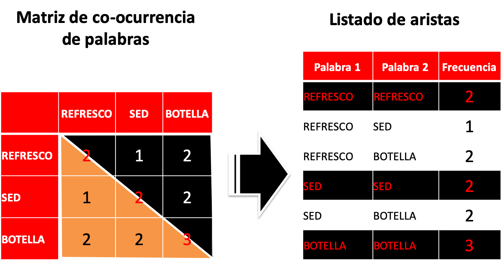
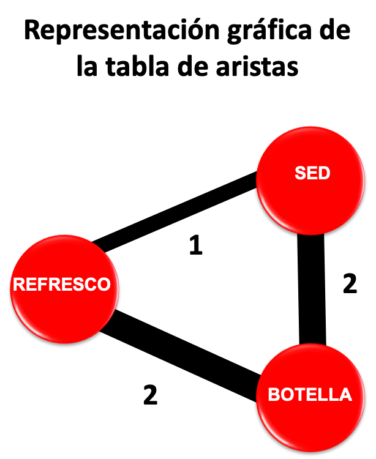
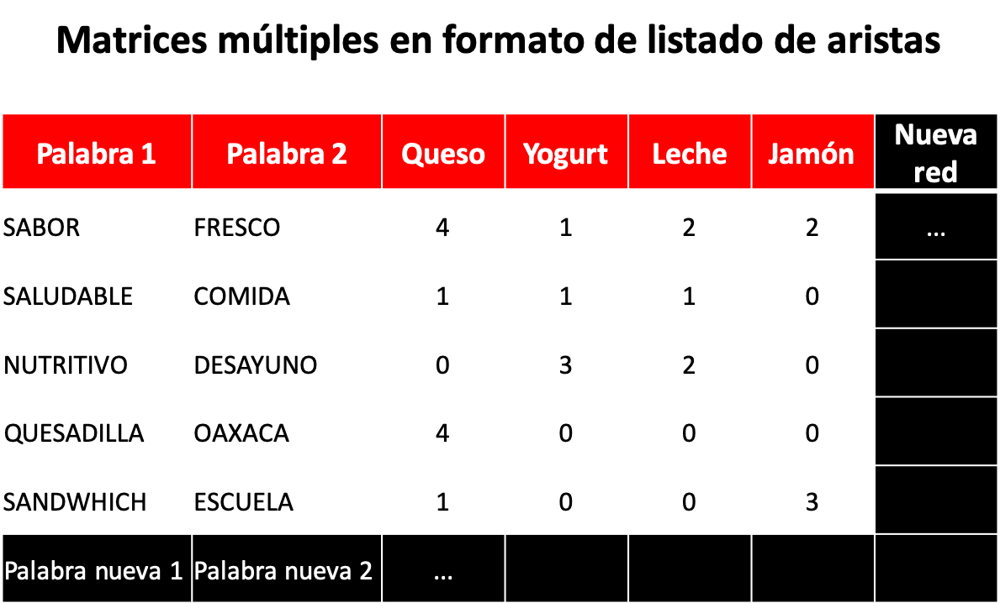

La verdad se encuentra en la simplicidad y no en la multiplicidad y confusión de las cosas.—Isaac Newton (1643-1727).
Me gusta explicar las cosas como me hubiera gustado que me las explicaran. Detrás de las ideas más complejas hay una explicación simple e ilustrativa. A veces utilizamos la fuerza bruta del entendimiento para llegar a ella (v. gr. Michael Faraday), pero en ocasiones nos llega por inspiración. En este artículo voy a tener el placer de divulgar un procedimiento muy simple, el cual me llegó por inspiración, sobre cómo almacenar múltiples o infinidad de matrices simétricas. Ignoro si este enfoque, que he imaginado, ya existe o se utiliza actualmente en algún tipo de software; tampoco tengo muy claro si es importante, eso tendrán que elucubrarlo los especialistas, matemáticos o cualquier otro profesional que se dedique al procesamiento y análisis de datos (i.e. data scientists). Yo, desde mi trinchera, considero que es importante darlo a conocer porque nos ahorra bastante trabajo y quizá hasta eficiente el trabajo de cómputo (eso se lo pregunto a los ingenieros en computación). Se trata de trabajar con espacios tridimensionales en un espacio bidimensional. !Momento!, me acabo de acordar que hace unos meses Hadley Wickham publicó una actualización de su paquete tidyr que ayuda a manipular bases de datos y se refiere a esos cambios como “the state of the art”. Se trata de una cosa diferente a lo que estamos tratando aquí, pero que es muy ilustrativa sobre la importancia del acomodo de una base de datos para poder procesar y analizarla eficientemente. Bueno, sin más preámbulo, vayamos a lo que nos interesa.
El álgebra lineal o matricial es la herramienta más poderosa de las matemáticas. La gran mayoría de los análisis que hacemos los investigadores de mercado: regresión lineal múltiple, análisis factorial, análisis discriminante, etc., serían muy difíciles de computar, si no es que imposible, si no existiera el álgebra matricial. Las matrices son omnipresentes en toda la computación, se usan en los videojuegos, la inteligencia artificial, las redes sociales, el procesamiento de lenguaje natural, etc. Hablando particularmente de esta última área, en la que nos hemos desempeñado en los últimos años y, sobre todo, en el análisis de redes de texto y redes semánticas naturales, se requiere del conocimiento de álgebra matricial (suena compleja esta materia, pero, créemelo, sus procedimientos son simples, aunque muy ingeniosos) para crear una matriz de co-ocurrencia de palabras. O sea, cuántas veces la palabra A aparece junto a la palabra B, C, D,… y viceversa. Es decir, contar las veces en que un par de palabras aparecen juntas. Al final, esa matriz o arreglo se convierte en un listado de aristas que se procesa con la ayuda de cualquier software de visualización y análisis de redes sociales (por ejemplo, NodeXL, Gephi, Cytoscape, entre decenas de muchos otros). Observa el ejemplo de juguete que se muestra en la imagen de abajo.
 Se trata de una matriz de 3 x 3 (3 renglones y 3 columnas) compuesta por las palabras REFRESCO, SED, y BOTELLA. La matriz indica claramente que REFRESCO se repitió u ocurrió 2 veces; que lo hizo de manera conjunta con SED en 1 ocasión; y que coincidió con BOTELLA en 2 ocasiones. Por otro lado SED co-ocurrió con BOTELLA en 2 ocasiones. Observa que una de las características de una matriz simétrica es que los valores superiores por encima de la diagonal (triángulo negro) son idénticos a los inferiores debajo de la diagonal (triángulo naranja). Por esa razón cuando se convierte la matriz a un listado de aristas sólo se toman en cuenta los valores de uno u otro lado de la diagonal; en total en nuestra matriz tenemos 6 valores. Con esos valores es que se construye el siguiente grafo.

Nota que este grafo representa las conexiones de la tabla de aristas y que la línea que los une, llamada arista, se engrosa con base al número de veces que se conectan las palabras entre sí (v. gr. REFRESCO se une con SED en 1 sola ocasión). Asimismo, se han eliminado las conexiones que van hacia la misma palabra: REFRESCO con REFRESCO, SED con SED, y BOTELLA con BOTELLA. En una red semántica natural, no se grafican esos valores. De igual manera, tampoco se grafican los pares de palabras que tienen una frecuencia de uno. Porque significa que sólo una persona piensa que esos conceptos se unen y eso no es una red ni mucho menos un grupo (dos o más personas). Aquí, las hemos graficado sólo con propósitos didácticos.
Una red de cualquier tipo es un grupo, porque está compuesta de 2 o más elementos y, usualmente, se somete a las mismas leyes que rigen a los grupos: nacen, crecen, producen y mueren; en otras palabras está viva. Algunos programas como Gephi tratan de capturar esta evolución de las redes con líneas de tiempo; que no es otra cosa que ir captando su topografía y atributos en diferentes momentos. En otras palabras, los cambios en la red: aristas que mueren y otras nuevas que surgen; nodos (palabras, sujetos o cosas) nuevos que surgen y otros que desaparecen; nodos que aumentan o disminuyen su importancia, etc. Muchas cosas ocurren a una red a través del tiempo, desde su propagación hasta su extinción. Y aquí es donde comenzó mi problema y mi necesidad. Supón que quiero representar estos cambios con el software existente; Gephi, por ejemplo, me pide crear una tabla con intervalos de tiempo, señalando la fecha de aparición de un nodo y/o arista para poder capturar estos cambios. Y aunque puedo crear tantos intervalos de tiempo como sea necesario, la verdad es que el formato es nada amigable y resulta poco claro. Además, me supongo que los otros programas están por el estilo. Pero vamos un paso más lejos, supón que quiero analizar mi red por subgrupos. Es decir, visualizar una red de mujeres y otra de hombres; o por edades y ciudades o simplemente la de dos o más categorías de consumo distintas: queso, yogurt, leche, etc. Se puede hacer, con la salvedad de que tengo que preparar una matriz por cada subgrupo, convertirla a aristas y alimentarla individualmente, una a la vez, en Gephi (esto va para todos los programas, si no es así, ojalá y alguien me saque de mi error) y lo que es peor, ahogarme con n número de archivos de datos igual al número de redes visualizadas.
Como dije, me llegó por inspiración. Imagina que tu listado de aristas se extiende horizontalmente para darle cabida a otras dimensiones. Es decir, categorías de consumo o subgrupos o simplemente cortes en el tiempo. Los vértices o nodos siguen siendo los mismos, sólo se agregan, a lo largo del archivo, aquellos nuevos que vayan surgiendo y, a lo ancho, se agregan las co-ocurrencias de la nueva red. Cómo se ilustra en la imagen de abajo.
 Quizá no veas la utilidad de este formato, pero si decides incursionar en el análisis de redes de texto o redes semánticas naturales, seguramente llegarás a apreciarlo mucho. No te preocupes de que tu listado crezca increíblemente, con el poder de computo que hay hoy en día, eso ya no es problema. Sin embargo, te aconsejo no tratar de hacerlo en Excel, sería la muerte. Cualquier lenguaje de programación te puede ayudar a hacerlo sin dolor. Por ejemplo, R tiene herramientas como Tidyr o Quanteda, entre muchos otros, que no requieren habilidades de programación para hacerlo fácilmente.
Primero, puedes procesar la red o redes con sólo cambiar de columna. Segundo, no estás repite y repite aristas cada vez que vas a hacer una red; en otras palabras, te olvidas de hacer múltiples archivos. Tercero, el proceso es más rápido, no hay que pasar primero por una matriz y convertir, luego otra matriz y convertir, o hacerlo como dice Buzz Lightyear: “Al infinito y más allá”. Cuarto, es posible representar lineas de tiempo, sin tanto esfuerzo. Quinto, puedes hacer análisis cruzados entre categorías.
Gracias por leernos.